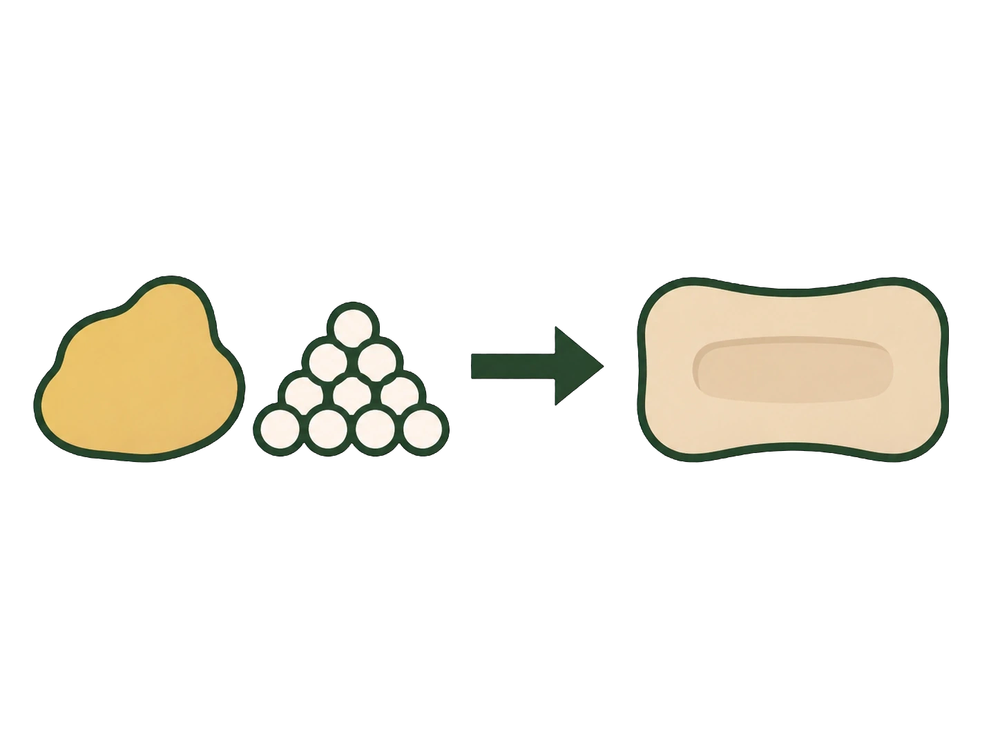

- Basiska lösningar har pH över 7
- De innehåller fler hydroxidjoner än vätejoner
- De leder ström
- De kan kännas hala — ett varningstecken
- Många är frätande, och de neutraliseras av syror
Baser är olika ämnen med olika användning, men basiska lösningar har flera saker gemensamt. Det mesta har du redan mött — här samlar vi ihop det.
De har högt pH
Alla basiska lösningar har pH över 7. Det beror på att de innehåller fler hydroxidjoner än vätejoner.
De leder ström
En basisk lösning innehåller joner som kan röra sig fritt. Därför leder den elektrisk ström, precis som sura lösningar och saltlösningar gör.
Det är fria laddningar som krävs, och en basisk lösning har gott om dem.
De känns hala
Baser reagerar med fett, och din hud har ett lager fett på ytan. När en basisk lösning kommer åt det börjar fettet brytas ner, och det som bildas är tvålliknande.
Därför känns basiska lösningar hala. Men som du redan vet är det inget att pröva — halheten betyder att lösningen har börjat lösa upp din hud.
De kan vara frätande
Många starka baser är kraftigt frätande och kan ge allvarliga skador på hud och ögon.
Att en bas är svag gör den inte automatiskt ofarlig. Precis som hos syrorna spelar koncentrationen lika stor roll som styrkan.
De reagerar med syror
Den sista gemensamma egenskapen är den som leder vidare till nästa delkapitel.
När en bas möter en syra reagerar hydroxidjonerna med vätejonerna och bildar vatten. Båda lösningarnas egenskaper försvinner.
Den reaktionen kallas neutralisation, och den får ett eget delkapitel.
- Vad har alla basiska lösningar gemensamt?
- Varför leder de ström?
- Varför känns de hala?
- Hur farliga är starka baser?
- Vad händer när en bas möter en syra?
Basiska lösningar har högt pH och leder ström
Baser är olika ämnen, men basiska lösningar har flera gemensamma egenskaper.
De har pH över 7 och innehåller ett överskott av hydroxidjoner jämfört med oxoniumjoner.
Eftersom basiska lösningar innehåller joner kan de leda elektrisk ström.
Båda egenskaperna följer av samma sak: att basen gett upphov till joner i lösningen. pH mäter hur många hydroxidjoner det finns, och ledningsförmågan visar att de kan röra sig.
De reagerar med fett och kan vara frätande
Många basiska lösningar kan också kännas hala. Det beror bland annat på att starka baser reagerar med fett.
Det är en av anledningarna till att baser används i bland annat rengöringsmedel och vid tvåltillverkning.
Samma egenskap som gör basen användbar i en propplösare gör den farlig på huden. Det är inte två olika saker — det är samma reaktion på olika material.
Många starka baser är dessutom kraftigt frätande och kan orsaka allvarliga skador på hud och ögon.
De neutraliseras av syror
En annan viktig egenskap är att baser kan reagera med syror. När en syra och en bas reagerar med varandra kan vätejoner och hydroxidjoner bilda vatten:
Detta är grunden för neutralisation.
Reaktionen är densamma oavsett vilken syra och vilken bas som används, så länge båda är starka. Det är alltid oxoniumjoner och hydroxidjoner som möts.
De övriga jonerna deltar inte utan finns kvar i lösningen — och de bildar ett salt när vattnet avdunstar.
Varför basiska lösningar leder ström olika bra
Standardtexten säger att basiska lösningar leder ström eftersom de innehåller joner. Det stämmer, men alla basiska lösningar leder inte lika bra.
Ledningsförmågan beror på hur många rörliga joner lösningen faktiskt innehåller — och där skiljer sig starka och svaga baser kraftigt.
En natriumhydroxidlösning på 0,1 mol/dm³ innehåller 0,1 mol hydroxidjoner och 0,1 mol natriumjoner per liter. Nästan allt ämne har blivit joner.
En ammoniaklösning på samma koncentration innehåller bara omkring 0,001 mol hydroxidjoner. Resten är oreagerade ammoniakmolekyler, och de är neutrala — de bär ingen laddning och bidrar inte till strömmen.
Mäter man ledningsförmågan i de två lösningarna är skillnaden dramatisk, trots att de innehåller lika mycket bas. Det är faktiskt ett sätt att avgöra om en bas är stark eller svag.
Hydroxidjonen rör sig ovanligt snabbt
En detalj som förklarar varför basiska lösningar leder särskilt bra.
De flesta joner färdas genom vatten genom att knuffa sig fram mellan molekylerna. Det går långsamt.
Hydroxidjonen och oxoniumjonen gör något annat. De behöver inte förflytta sig alls — i stället hoppar en proton från molekyl till molekyl längs en kedja av vätebundna vattenmolekyler. Laddningen rör sig snabbt genom vätskan, medan varje enskild partikel bara flyttar sig en liten bit.
Mekanismen kallas Grotthuss-mekanismen, och den gör att just dessa två joner leder ström flera gånger effektivare än andra joner av samma storlek.
Om modellen: standardtexten behandlar ledningsförmågan som en egenskap alla joner ger. Med skillnaden mellan stark och svag bas blir den ett mått på hur mycket som faktiskt reagerat — och med protonhoppen blir det tydligt att alla joner inte är lika.
- Natriumhydroxid i propplösare, tvål och pappersindustri
- Kaliumhydroxid i mjuktvål och batterier
- Kalciumhydroxid i murbruk och byggmaterial
- Ammoniak i rengöringsmedel och som råvara till konstgödsel
- Tvåltillverkning bygger på att baser reagerar med fett
Baser finns i hemmet, i industrin och i naturen. Här är de viktigaste.
Natriumhydroxid
Natriumhydroxid är den vanligaste starka basen, och du har den troligen under diskbänken.
Propplösare innehåller ofta natriumhydroxid. Den fungerar för att den bryter ner fett och annat organiskt material — precis det som brukar sätta igen ett avlopp.
Samma egenskap används vid tvåltillverkning. Man låter fett reagera med natriumhydroxid, och produkten är tvål. Att basiska lösningar känns hala är alltså samma reaktion, fast oavsiktlig och på din hud.
- Vad som finns på vänster sida om pilen
- Vad som finns på höger sida
- Om du känner igen det ena av ämnena till vänster från köket

Inom pappersindustrin används natriumhydroxid för att behandla trä och separera vedens olika beståndsdelar från varandra.
Kaliumhydroxid
Kaliumhydroxid liknar natriumhydroxid men ger mjukare tvålar. Flytande tvål och såpa tillverkas ofta med kaliumhydroxid i stället.
Den används också som vätska i vissa batterier.
Kalciumhydroxid
Kalciumhydroxid kallas ibland släckt kalk och används i murbruk och andra byggmaterial.
Murbruk härdar genom att kalciumhydroxiden långsamt reagerar med koldioxid ur luften och blir kalksten igen. Det är därför gamla murar blir hårdare med tiden.
Ammoniak
Ammoniak är den vanligaste svaga basen.
Den finns i vissa rengöringsmedel, eftersom den hjälper till att lösa fett och smuts.
Men den allra största användningen är en helt annan: ammoniak är råvaran till konstgödsel. Växter behöver kväve för att bygga proteiner, och luftens kvävgas är för trög för att de ska kunna använda den direkt.
Genom att först tillverka ammoniak av luftens kväve kan man göra gödsel som växterna kan ta upp. Ammoniak har därför enorm betydelse för världens matproduktion.
- Vad används natriumhydroxid till?
- Vad skiljer kaliumhydroxid från natriumhydroxid?
- Vad kallas kalciumhydroxid i vardagligt tal?
- Hur härdar murbruk?
- Vad är ammoniakens största användningsområde?
Fyra baser är särskilt viktiga
| Bas | Formel | Stark/svag | Används till |
|---|---|---|---|
| Natriumhydroxid | NaOH | Stark | Propplösare, tvål, pappersindustri |
| Kaliumhydroxid | KOH | Stark | Mjuka tvålar, batterier |
| Kalciumhydroxid | \(\ce{Ca(OH)2}\) | Stark | Murbruk, byggmaterial |
| Ammoniak | \(\ce{NH3}\) | Svag | Rengöringsmedel, kvävegödsel |
Tre av dem är starka och används där man vill ha kraftig effekt. Den svaga används där en mildare verkan räcker.
Natriumhydroxid löser fett och organiskt material
Natriumhydroxid, NaOH, är en stark bas. Ämnet används bland annat i propplösare eftersom det kan bryta ned fett och annat organiskt material.
Natriumhydroxid används också vid tillverkning av tvål. Fett får då reagera med en stark bas och omvandlas till bland annat ämnen som fungerar som tvål.
Inom pappersindustrin används natriumhydroxid i processer där man behandlar trä och separerar olika delar av veden från varandra.
Kaliumhydroxid och kalciumhydroxid
Kaliumhydroxid, KOH, är också en stark bas. Den används bland annat vid tillverkning av mjuka och flytande tvålar. Kaliumhydroxid används även som elektrolyt i vissa typer av batterier.
Kalciumhydroxid, \(\ce{Ca(OH)2}\), kallas ibland släckt kalk. Ämnet används bland annat i murbruk och andra byggmaterial. Murbruk härdar genom att kalciumhydroxiden långsamt reagerar med koldioxid ur luften och åter bildar kalciumkarbonat.
Det är därför gamla murar blir hårdare med tiden — reaktionen pågår i årtionden.
Kalciumhydroxid används också för att höja pH i sura miljöer. Den användningen behandlas i delkapitlet om försurning.
Ammoniak är råvara till konstgödsel
Ammoniak, \(\ce{NH3}\), är en svag bas. Ammoniak används i vissa rengöringsmedel eftersom den kan hjälpa till att lösa fett och smuts.
En mycket stor användning av ammoniak finns inom jordbruket. Ammoniak är en viktig råvara vid tillverkning av kvävegödsel. Kväve är ett grundämne som växter behöver för att bland annat kunna bygga proteiner.
Luften består till nästan fyra femtedelar av kväve, men växter kan inte ta upp det direkt. Det måste först omvandlas till en form de kan använda, och det är där ammoniaken kommer in.
Ammoniak har därför stor betydelse för den moderna livsmedelsproduktionen.
Ammoniak och världens mat
Ammoniak är kanske det ämne som mest direkt påverkat hur många människor som kan leva på jorden.
Kväve finns i överflöd — nästan åttio procent av luften är kvävgas. Men kvävgasmolekylen hålls samman av en trippelbindning, som du mötte i repetitionsavsnitt 3, och den är så stark att växter inte kan bryta den. Kvävet är där men oåtkomligt.
I naturen löses problemet av bakterier som kan omvandla kvävgas till former växter kan ta upp. Det går långsamt, och länge var tillgången på kväve den gräns som satte taket för hur mycket mat som kunde odlas.
I början av 1900-talet löste Fritz Haber och Carl Bosch problemet tekniskt. Under mycket högt tryck och hög temperatur, med hjälp av en katalysator, går det att få kvävgas och vätgas att reagera och bilda ammoniak.
Processen används fortfarande, och en betydande del av allt kväve i din egen kropp har passerat genom den. Uppskattningar pekar på att ungefär halva världens befolkning äter mat som odlats med konstgödsel.
Och baksidan
Samma process har en annan sida.
Haber-Bosch-processen kräver mycket energi och står för ett par procent av världens energianvändning. Kvävegödsel som inte tas upp av växterna rinner ut i vattendrag och orsakar övergödning.
Och ammoniak användes också till sprängämnen. Samma process som gav världen mat gav den också möjlighet att tillverka ammunition i industriell skala under första världskriget.
Om modellen: standardtexten nämner att ammoniak är viktig för livsmedelsproduktionen. Bakom den meningen ligger en av 1900-talets mest omvälvande uppfinningar — och ett tydligt exempel på att kemisk kunskap i sig varken är god eller ond.
- Starka baser är kraftigt frätande
- Ögonskador är särskilt allvarliga — basen tränger djupare in än syra
- Använd alltid skyddsglasögon
- Vid stänk: spola länge med mycket vatten
- Blanda aldrig propplösare med andra rengöringsmedel
Baser ska hanteras med samma respekt som syror, och på ett sätt med ännu större.
Varför ögon är särskilt allvarligt
Både syror och baser kan skada ögat, men baser gör det på ett farligare sätt.
När en syra träffar vävnad reagerar den med proteinerna på ytan. De klumpar ihop sig och bildar ett lager som faktiskt bromsar syran från att tränga djupare.
En bas gör tvärtom. Den löser upp fett, och cellernas ytterhöljen består av fett. Basen löser alltså upp det som skulle ha hindrat den, och kan fortsätta inåt.
Skadan blir därför ofta djupare än den ser ut, och den kan fortsätta utvecklas efter att ämnet sköljts bort.
Använd alltid skyddsglasögon när du arbetar med starka baser.
Om något går fel
Får du bas på huden eller i ögat: spola omedelbart med stora mängder vatten.
Och spola längre än du tror behövs. Vid stänk i ögat ska spolningen fortsätta i minst tjugo minuter, och du ska säga till din lärare direkt.
Blanda aldrig
Propplösare innehåller ofta natriumhydroxid, och den får aldrig blandas med andra rengöringsmedel.
Blandningar av rengöringskemikalier kan utveckla kraftig värme eller bilda giftiga gaser. Det finns inget att vinna på att blanda — en propplösare är redan så effektiv den kan vara.
Varför reglerna finns
Starka baser är användbara just för att de reagerar kraftigt med andra ämnen. De löser fett, bryter ner organiskt material och fungerar i industriella processer.
Samma egenskap gör dem farliga. Det är inte två olika saker — det är samma egenskap sedd från två håll.
- Varför är basstänk i ögonen särskilt allvarligt?
- När ska skyddsglasögon användas?
- Vad gör man vid stänk på hud eller i ögon?
- Varför får propplösare aldrig blandas med annat?
- Varför är baser farliga av samma skäl som de är användbara?
Basskador i ögon är särskilt allvarliga
Starka baser kan vara kraftigt frätande. Frätande baser kan skada hud, ögon och andra vävnader.
Skador i ögonen är särskilt allvarliga eftersom starka baser kan tränga in i vävnaden och fortsätta orsaka skada.
Det skiljer baser från syror. En syra bildar ett skorpliknande lager som bromsar den, medan en bas löser upp fettet i vävnaden och kan fortsätta inåt.
Därför ska man alltid använda skyddsglasögon när man arbetar med starka baser i laboratorium.
Vid stänk: spola länge och tillkalla hjälp
Om en frätande bas kommer på huden eller i ögonen ska området omedelbart spolas med stora mängder vatten.
Vid stänk i ögonen behöver spolningen fortsätta under lång tid och hjälp ska snabbt tillkallas.
Spola betydligt längre än det känns nödvändigt — ofta tjugo minuter eller mer. Skadan kan fortsätta utvecklas efter att ämnet sköljts bort.
Produkter som innehåller starka baser ska alltid hanteras enligt säkerhetsinformationen på förpackningen.
Rengöringsmedel får aldrig blandas
Propplösare kan till exempel innehålla natriumhydroxid och får aldrig blandas med andra rengöringsmedel. Blandningar av olika rengöringskemikalier kan orsaka kraftig värmeutveckling eller bilda farliga ämnen.
Dessutom förbrukar de varandra. Blandar man ett surt och ett basiskt medel neutraliseras båda, och rengöringseffekten försvinner helt.
Starka baser är användbara just därför att de reagerar kraftigt med andra ämnen. Samma egenskap gör att de måste hanteras med stor försiktighet.
Laddar övningskort…
Laddar frågor ...